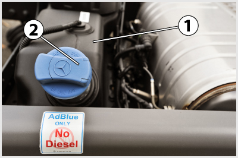
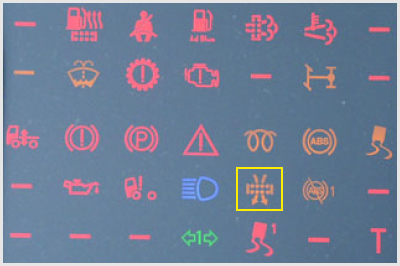

103. A repedt, lyukas, tömítetlen kipufogórendszert a lehető leghamarabb ki kell javíttatni, mert... #704432
az utastérbe kipufogógáz szivároghat, ami mérgezést okoz, illetve a kipufogás ilyenkor nagy zajjal jár.
a motor túlmelegedhet.
a motor fogyasztása jelentősen megnövekedhet.
104. Korszerű nehéz haszonjárműveken van-e lehetőség a száraz, papírbetétes levegőszűrő állapotának ellenőrzésére járó motor esetén? #704447
Igen, a műszerfalon elhelyezett műszerrel vagy kontroll-lámpával.
Nem, ilyen ellenőrzést csak szakműhelyben tudnak végezni.
Igen, a szűrőre csatlakoztatható mérőberendezéssel.
105. Amikor a levegőszűrő már részlegesen eltömődött, akkor... #704473
a motor tüzelőanyag-fogyasztása magasabb.
a motor teljesítménye és fogyasztása is megnövekszik.
a motor hűtése romlik, és ezért túlmelegedhet.
106. Miért szükséges levegőszűrőt alkalmazni a beszívott levegő tisztítására? #704505
A motor alkatrészeinek kisebb kopása, hosszabb élettartama érdekében.
A jobb keverékképzés érdekében.
Mert a szennyeződések nagymértékben rontják a motor égésfolyamatát.

107. A képen látható 1-es jelű alkatrész a tehergépkocsi... #704634
AdBlue tartálya.
tüzelőanyag-tartálya.
kenőolajtartálya.
szervoszivattyújának olajtartálya.
108. A képen látható 1-es jelű AdBlue tartály arra utal, hogy a tehergépkocsit... #704635
SCR rendszerű, nitrogénoxidokat lebontó katalizátorral szerelték fel.
részecskeszűrővel szerelték fel.
oxidációs katalizátorral szerelték fel.
katalizátorral nem szerelték fel.
109. Milyen gyakran kell a tehergépkocsi képen látható 1-es jelű AdBlue tartályát a tüzelőanyagtályhoz viszonyítva tölteni? #704636
Ritkábban.
Gyakrabban.
Ugyanolyan gyakran.

110. Mire figyelmeztet a képen a bekeretezett visszajelző lámpa? #704715
A légszűrő eltömődésére.
A katalizátorok rendellenes működésére.
Arra, hogy a fülkebillentő rendszer nincs megfelelően reteszelve.
111. Miért kell megszűrni a motorba beszívott levegőt? #704754
Mert a beszívott porszemcsék koptatják a hengert és a por az olajjal elkeveredve a csapágyak kopását is növeli.
Mert a beszívott por rontja a motor friss töltettel való feltöltődését.
Mert a beszívott por miatt a befecskendezett tüzelőanyag nem tud tökéletesen elkeveredni a levegővel.
112. Mi a száraz papírbetétes levegőszűrő működési elve? #704755
A levegő átáramlik a szűrőbetét anyagán, a porszemcsék fennakadnak a papír pórusain.
A levegőből a por a centifugális erő hatására válik ki.
A levegőben levő port megköti a szűrőházban levő olaj.
113. Hogyan regenerálják a korszerű haszongépjármű-motorok részecskeszűrőit? #704758
Automatikusan: a motor elektronikus szabályozórendszere időnként célzottan megemeli a kipufogógáz hőmérsékletét, ezzel a lerakódott koromrészecskék elégve távozhatnak a részecskeszűrőből.
A járművet 5-10.000 km-enként szakszervizbe kell vinni, ahol elvégzik ezt a műveletet.
A járművezetőnek a motor leállítását megelőzően, alapjárati fordulatszámon a megfelelő nyomógombot kell kb. egy percig működtetnie.
114. Mik a katalizátorokkal is felszerelt kipufogórendszer feladatai? #704759
A forró kipufogógáz veszélytelen elvezetése a motortól a szabadba, a károsanyag- és zajkibocsátásra vonatkozó előírások betartásával.
A motor hűtése a forró kipufogógázok elvezetése által.
A motor rázkódásának és zajkibocsátásának csökkentése.
115. Mely károsanyagok kibocsátását korlátozzák a közúti gépjárművek kipufogógázaiban az EURO előírások? #704760
A szénmonoxid, az elégetlen szénhidrogének, a nitrogénoxidok és a koromrészecskék mennyiségét.
A szénmonoxid, a széndioxid és az elégetlen szénhidrogének mennyiségét.
A szénmonoxid, a nitrogén és a koromrészecskék mennyiségét.
116. Milyen káros összetevő mennyiségének csökkentését lehet elérni a kipufogógáz visszavezetéssel (EGR)? #704761
A nitrogénoxidokét.
A szénmonoxidét.
A koromtartalomét (részecskékét).
117. Mi az oxidációs katalizátorok feladata a haszongépjárművek dízlemotorjainak kipufogórendszerében? #704762
Az elégetlen szénhidrogének és a szénmonoxid oxidálása ártalmatlan vegyületekké (víz és széndioxid), illetve a nitrogénmonoxid továbboxidálása nitrogéndioxiddá a további feldolgozáshoz.
A mögötte található részecskeszűrő működéséhez a megfelelő kipufogógáz-hőmérséklet beállítása.
A nitrogénoxidok semlegesítése.
118. Mi a szelektív katalitikus redukciót végző SCR katalizátorok feladata? #704763
A kipufogógázban található, mérgező nitrogéndioxidok átalakítása a befecskendezett AdBlue folyadék felhasználásával ártalmatlan vegyületekké.
Az elégetlen szénhidrogének és a szénmonoxid tovább oxidálása.
A széndioxid kibocsátás csökkentése az üvegházhatás elkerülése érdekében.